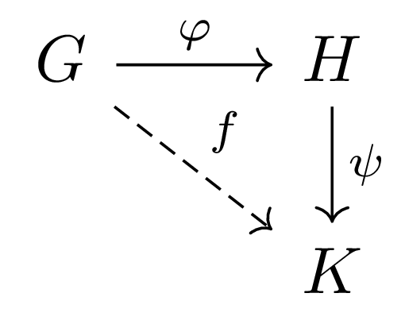

Introductory Algebra (CO-503): List of Problems
Dr. Qaisar Latif
Introductory Algebra Main Page
This page contains only a small part of problems that the students are suggested to solve. It doesn’t mean that these are very important, but that these are typed for some reason. Extra pages, containing a lot of problems, are distributed in the lectures.
Table of Contents
1 Week of Tuesday, 01. September 2020
Wants to solve more problems? Consider then, some of the standard, problems.
1.1 Problem
Let \(H\) and \(K\) be subgroups of a group \(G\).
- Show by example that \(H\cup K\) need not be a subgroup of \(G\).
- Prove that \(H\cup K\) is a subgroup of \(G\) if and only if either \(H\subseteq K\) or \(K\subseteq H\).
1.2 Problem
- Let \(H\) and \(K\) be a subgroups of a group \(G\). Prove that \(H\cap K\) is a subgroup of \(G\).
- Let \(\{H_i\}\) be a collection of subgroups of \(G\). Prove that \(\cap_i H_i\) is a subgroup of \(G\).
1.3 Problem
Let \(G\) be a group. Define
\begin{equation} \nonumber Z(G) := \Big\{ x\in G: xg=gx \text{ for all } g\in G\} \end{equation}Show that \(Z(G)\) is a subgroup of \(G\).
1.4 Problem
Let \(G\) and \(H\) be two groups. Define the the law of composition on the product of sets \(G\times H\) by:
\begin{equation} \nonumber (a,b)\cdot (c,d) := (ac,bd)\,. \end{equation}Show that \(G\times H\) is a group together with this law of composition. \(G\times H\) is an abelian group if and only if both \(G\) and \(H\) are abelian groups.
1.6 Problem
Let \(H\) and \(K\) be subgroups of an abelian group \(G\) and let
\begin{equation} \nonumber HK:=\Big\{hk:h\in H, k\in K\Big\} \end{equation}Prove that \(HK\) is a subgroup of \(G\).
1.7 Problem
Let \(H\) be a subgroup of a group \(G\) and, for (fixed) \(a\in G\). Fix the notation
\begin{equation} \nonumber aHa^{-1} := \Big\{aha^{-1}: h\in H\Big\}\,. \end{equation}Prove that \(aHa^{-1}\) is a subgroup of \(G\).
1.8 Problem
Let \(G\) be a group. Fix \(a\in G\). Define the centralizer of \(a\) in \(G\) as the following set
\begin{equation} \nonumber C(a):= \Big\{ x\in G: ax=xa\Big\}\,. \end{equation}Show that \(C(a)\) is a subgroup of \(G\).
Define the center of the group \(G\) to be the following set
\begin{equation} \nonumber Z(G) := \Big\{ a\in G: ga=ag \text{ for all } g \in G\}\,. \end{equation}Show that \(Z(G)
Prove that
\begin{equation} \nonumber Z(G) = \bigcap_{g\in G} C(g)\,. \end{equation}
1.10 Problem
Let \(G\) be a group in which \(g^2=e\) for all \(g\in G\). Prove that \(G\) is abelian.
1.11 Problem
Let \(a,b,c\) be elements of the group \(G\). Find the solutions \(x\) of the equations
- \(axa^{-1}=e\).
- \(axa^{-1}=a\).
- \(axb=c\).
- \(ba^{-1}xab^{-1}=ba\).
1.12 Problem
Let \(G\) be a group and \(c\) be a fixed element of \(G\). Define a new operation \(*\) on \(G\) by
\begin{equation} \nonumber x*y := xc^{-1}y\,. \end{equation}for all \(x\) and \(y\) in \(G\). Prove that \(G\) is a group under the operation \(*\).
1.13 Problem
Let \(G\) be a group in which \((xy)^2=x^2y^2\) for all \(x,y\in G\). Prove that \(G\) is abelian.
1.14 Problem
Let \(x\) and \(g\) be elements of \(G\). Prove, using mathematical induction, that for all positive integers \(k\)
\begin{equation} \nonumber (x^ {-1}gx)^k = x^{-1}g^kx\,. \end{equation}Deduce that \(g\) and \(x^{-1}gx\) have the same order.
1.15 Problem
Let \((G,+)\) be a group, not necessarily abelian, and \(S\) a nonempty set, and \(M(S,G)\) the set of all functions \(f:S\to G\). Define the law of composition on \(M(S,G)\) by:
\begin{equation} \nonumber (f+g)(s) := f(s)+g(s)\,. \end{equation}Prove that \(M(S,G)\) is a group, which is abelian if \(G\) is.
1.16 Problem
Define an equivalence relation \(\sim\) on \(\mathbb{Q}\) by: \(a,b\in \mathbb{Q},\ a\sim b \Leftrightarrow a-b\in \mathbb{Z}\).
- Show that \( \sim\) is an equivalence relation on \(\mathbb{Q}\).
- The set of equivalence classes defined by above \(\sim\), denoted here with \(\mathbb{Q}/\mathbb{Z}\), is an infinite abelian group.
1.17 Problem
If \(G\) is a group, \(a,b\) in \(G\) and \(bab^{-1}=a^{r}\) for some \(r\in \mathbb{N}\), then \(b^j a b^{-j}=a^{r^j}\).
1.18 Problem
Let \(G\) be a group such that there are three consecutive integers for which \((ab)^n=a^nb^n\) for all \(a,b\in G\). Prove that \(G\) is abelian.
1.19 Problem
If \(G\) is a finite group of even order, then there is an element \(a\in G\) of order \(2\).
1.20 Problem
Let \(G\) be a non empty finite set with an associative law of composition such that for all \(a,b,c\in G\) the condition \(ab=ac\implies b=c\) and \(ba=ca\implies b=c\). Then \(G\) is a group. Show that the conclusion may be false if \(G\) is infinite.
1.21 Problem
Determine which of the following binary operations are associative: the operation \(*\) on
- \(\mathbb{Z}\) defined by \(a*b:=a-b\).
- \(\mathbb{R}\) defined by \(a*b:=a+b+ab\).
- \(\mathbb{Q}\) defined by \(a*b:=(a+b)/5\).
- \(\mathbb{Z}\times \mathbb{Z}\) defined by \((a,b)*(c,d):=(ad+bc,bd)\).
- \(\mathbb{Q}\setminus \{0\}\) defined by \(a*b:=a/b\).
Which of the above binary operations are commutative?
1.22 Problem
Prove that the addition in \(\mathbb{Z}/k \mathbb{Z}\) is associative.
(You may have to recall the definitions from the lecture and explain what the elements really are.)
1.23 Problem
Let \(n\) be a fixed integer, and \(G:=\{z\in \mathbb{C}: z^n=1\}\). Prove that \(G\), with the multiplication of complex numbers, is a group.
1.26 Problem
Let \(G\) be a group. Prove that for any choice of elements \(a_1,a_2,\ldots,a_n\in G\)
\begin{equation} \nonumber (a_1a_2\cdots a_n)^{-1} = a_n^{-1}\cdots a_2^{-1}a_1^{-1}\,. \end{equation}1.27 Problem
Let \(G\) be a group and \(a,b\in G\). Prove that \(xy=yx\) if and only if \(y^{-1}xy=x\) if and only if \(x^{-1}y^{-1}xy=1\).
1.28 Problem
Let \(G\) and \(m,n\in \mathbb{N}\). Prove that
- \(x^{m+n}=x^m x^n\).
- \((x^m)^n = x^{mn}\).
- \((x^m)^{-1}=x^{-m}\).
- Establish part 1 for all integers.
1.29 Problem
Let \(G\) be a group. Show that any element \(x\) in \(G\) and its inverse \(x^{-1}\) have the same order.
1.30 Problem
Let \(G\) be a group and \(a,b\) be commuting elements in it, i.e., \(ab=ba\). Prove that (using mathematical induction) \((ab)^n=a^nb^n\).
1.31 Problem
Let \(G\) be a group and \(a,b\in G\). Recall that the order of an element is the smallest positive integer \(n\) such that \(a^n=e\), where \(e\) is the identity element. Prove that
- The order of \(b\) and \(aba^{-1}\) is the same.
- The order of \(ab\) and \(ba\) is the same. [Hint: Try using part 1
1.32 Problem
Let \(G\) be a group and \(x\in G\) be an element of oder \(n>1\). Show that the elements in the list \(e,x,x^2,x^3,\ldots,x^{n-1}\) are all distinct. Conclude that the order of an element in a group is doesn’t exceed the number of elements in the group.
1.33 Problem
Let \(G\) be a group. Show that it must be abelian if one of the following holds:
- \(G\) has three elements.
- \(G\) has four elements.
- \(G\) has five elements.
1.34 Problem
Let \(f:G\to H\) be a group homomorphism, and \(K\) be a subgroup of \(H\). Prove that the preimage \(f^{-1}(K)\) is a subgroup of \(G\).
1.35 Problem
If \(f:G\to G\) is a homomorphismp of groups, prove that \(Fix(f):=\{g\in G: f(g)=g\}\) is a subgroup of \(G\).
1.36 Problem
Recall the construction of the set \(\mathbb{Z}/k \mathbb{Z}\) of sets, and the fact that it is a group under the operation defined by: for \([n],[m]\) in \(\mathbb{Z}/k \mathbb{Z}\)
\begin{equation} \nonumber [n]+[m] := [n+m]\,. \end{equation}Define \(f:\mathbb{Z}\to \mathbb{Z}/k \mathbb{Z}, n\mapsto [n]\). Show that \(f\) is a epimorphism.
2 Week of Monday, 07. September 2020
2.1 Problem
- Write each permutation in the cycle notation:
- \(\begin{pmatrix} 1 & 2 & 3 & 4 & 5 & 6 & 7 & 8 & 9 \\ 7 & 2 & 1 & 4 & 5 & 6 & 3 & 8 & 9 \end{pmatrix}\)
- \(\begin{pmatrix} 1 & 2 & 3 & 4 & 5 & 6 & 7 & 8 & 9 \\ 1 & 2 & 5 & 4 & 7 & 6 & 9 & 3 & 8 \end{pmatrix}\)
- Compute each product:
- \((246)(147)(135)\)
- \((12)(53214)(23)\)
- Express as a product of disjoint cycles
- \(\begin{pmatrix} 1 & 2 & 3 & 4 & 5 & 6 & 7 & 8 & 9 \\ 2 & 1 & 3 & 5 & 4 & 7 & 9 & 8 & 6 \end{pmatrix}\)
- \(\begin{pmatrix} 1 & 2 & 3 & 4 & 5 & 6 & 7 & 8 & 9 \\ 3 & 5 & 1 & 2 & 4 & 9 & 8 & 7 & 6 \end{pmatrix}\)
- Write the products in 1 and 3 as a product of transpositions.
2.3 Problem
Let \(\sigma\) and \(\tau\) be disjoint cycles in \(S_n\). Prove that \(\sigma \tau=\tau\sigma\).
2.4 Problem
Show that the subgroup \(G\) of \(S_4\) generated by the element \(\sigma=(1234)\) and \(\tau=(24)\) is isomorphic to \(D_8\).
2.6 Problem
If \(\sigma\) is a \(k\)-cycle with \(k\) odd prove that there is a cycle \(\tau\) such that \(\tau^2=\sigma\).
2.7 Problem
Let \(\sigma\) be a \(k\)-cycle in \(S_n\).
- Prove that \(\sigma^2\) is a cycle if and only if \(k\) is odd.
- If \(k=2t\), prove that there are \(t\)-cycles \(\tau\) and \(\beta\) such that \(\sigma^2=\tau\beta\).
2.8 Problem
Let \(\sigma\) and \(\tau\) be transpositions in \(S_n\) with \(n\ge 3\). Prove that
- \(\sigma\tau\) is a product of cycles of length \(3\).
- every element of \(A_n\) is a product of cycles of length \(3\).
2.9 Problem
If \(\varphi:G\to H\) is an isomorphism, prove that \(\vert \varphi(x)\vert =\vert x\vert \) for all \(x\in G\). Deduce that any two isomorphic groups have the same number of elements of order \(n\). Is the result true if \(\varphi\) is only assumed to be a homormorphism or a monomorphism?
2.10 Problem
If \(\varphi:G\to H\) is an isomorphism, prove that \(G \) is abelian if and only if \(H\) is abelian. If \(\varphi:G\to H\) is a homomorphism, what additional conditions on \(\varphi\) (if any) are sufficient to ensure that if \(G\) is abelian, then so is \(H\)?
2.11 Problem
Prove that the multiplicative groups \(\mathbb{R}\setminus\{0\}\) and \(\mathbb{C}\setminus\{0\}\) are not isomorphism.
2.16 Problem
Let \(G\) and \(H\) be groups. Prove that \(G\times H\) and \(H\times G\) are isomorphic.
2.17 Problem
Let \(G\) and \(H\) be groups and let \(\varphi:G\to H\) be a group homomorphism. Prove that the image of \(\varphi\), \(\varphi(G)\), is a subgroup of \(H\). Prove that if \(\varphi\) is injective then \(G\cong \varphi(G)\).
2.18 Problem
Let \(G\) and \(H\) be groups and let \(\varphi:G\to H\) be a homomorphism. Define the kernel of \(\varphi\) to be \(\{g\in G: \varphi(g)=e\}\). Prove that the kernel of \(\varphi\) is a subgroup of \(G\). Prove that \(\varphi\) is injective if and only if the kernel of \(\varphi\) is the identity subgroup of \(G\).
2.19 Problem
Define a map \(\pi:\mathbb{R}^2\to \mathbb{R}\) by \(\pi((x,y))=x\). Prove that \(\pi\) is a homomorphism and find the kernel of \(\pi\), that is, describe the set
\begin{equation} \nonumber Ker(\pi) := \{g\in G: \pi(g)=e\}\,. \end{equation}2.20 Problem
Let \(L\) and \(M\) be groups and let \(G\) be their direct product, \(L\times M\). Prove that the maps \(\pi_1:G\to L\) and \(\pi:G\to M\) defined by \(\pi_1((a,b))=a\) and \(\pi((a,b))=b\) are homomorphisms and find their kernels.
2.21 Problem
Let \(G\) be any group. Prove that the following are equivalent:
- the map \(g\mapsto g^{-1}\) defined on \(G\) is a group homormophism
- the map \(g\mapsto g^2\) defined on \(G\) is a group homormophism
- \(G\) is abelian.
2.22 Problem
Let \(G\) be a group and let \(Aut(G)\) be the set of all the isomorphisms from \(G\) onto \(G\). Prove that \(Aut(G)\) is a group under function composition.
2.23 Problem
The group of automorphism of the additive group \((\mathbb{Q},+)\) is isomorphic to the multiplicative group \((\mathbb{Q}^\times,\cdot)\)1.
2.24 Problem
Let \(G\) be a finite group and let \(x\) and \(y\) be distinct elements of oder \(2\) in \(G\) that generate \(G\). Prove that \(G\cong D_{2n}\), where \(n=\vert xy\vert\).
2.25 Problem
Consider the linear space \(\mathbb{R}^2\) and fix a basis \(((e_1,e_2))\) for it. Define a subset \(B\) of \(GL(\mathbb{R}^2)\) by:
\begin{equation} \nonumber B:= \left\{\varphi\in GL(\mathbb{R}^2): \varphi(e_1)=\lambda e_1\text{ for some }\lambda \in \mathbb{R}\right\}\,. \end{equation}- Describe the elements of \(B\) as matrices with respect to the basis \(((e_1,e_2))\).
- Show that \(B\) is a subgroup of \(GL(\mathbb{R}^2)\).
2.26 Problem
Let \(R^\times\) be the multiplicative group of nonzero real numbers. Describe explicitly the kernel of the absolute value homomorphism \(x\mapsto \vert x\vert\).
2.27 Problem
Let \(\mathbb{C}^\times\) be the multiplicative group of nonzero complex numbers. What is the kernel of the homomorphism absolute value \(z\mapsto \vert z\vert\) of \(\mathbb{C}^\times\) into \(\mathbb{R}^\times\).
2.29 Problem
Let \(G\) be a group. Let \(g\) be and element of \(G\). Let \(\varphi_g:G\to G\) be the map such that
\begin{equation} \nonumber \varphi_g(x):=gxg^{-1}\,. \end{equation}- Show that \(\varphi_g:G\to G\) is an automorphism of \(G\).
- Show that the set of all such maps \(\varphi_g\) with \(g\in G\) is a subgroup of \(Aut(G)\).
- Show that the map \(g\mapsto \varphi_g\) is a group homomorphism.
3 Week of Monday, 14. September 2020
3.1 Problem
Let \(f:G\to G^\prime\) be a group homomorphism with \(Ker(f)=:H\). Assume that \(G\) is finite. The order of the group \(G\), that is, the number of elments in that group, is denoted here with \(\vert G\vert\).
Show that
\begin{equation} \nonumber \vert G\vert = \vert f(G)\vert \times \vert H\vert \end{equation}- Suppose that \(G\) and \(G^\prime\) are finite groups and that the orders of \(G\) and \(G^\prime\) are relatively prime. Prove that \(f\) is trivial, that is, \(f(G)=\{e^\prime\}\).
3.2 Problem
Let \(G\) be a group and \(H,K < G\) such that \(H < K\). Assume further that the indices \(\vert G:K\vert\) and \(\vert K:H\vert\) are finite. Show that \(\vert G:H\vert\) is also finite and moreover
\begin{equation} \nonumber \vert G:H\vert=\vert G:K\vert \times \vert K:H\vert \end{equation}We do not assume here that the group \(G\) is finite.
3.3 Problem
Let \(p\) be a prime number and let \(G\) be a group with a subgroup \(H\) of index \(p\) in \(G\). Let \(S\) be a subgroup of \(G\) such that \(H\subseteq S\subseteq G\). Prove that \(S=H\) or \(S=G\).
3.4 Problem
Show that the group of inner automorphisms is normal in the group of all automorphisms of a group \(G\).
3.5 Problem
Let \(H_1\) and \(H_2\) be two normal subgroup of \(G\). Show that \(H_1\cap H_2\) is a normal subgroup of \(G\).
3.6 Problem
Let \(f:G\to G^\prime\) be an epimorphism. Let \(H\) be a normal subgroup of \(G\). Show that \(f(H)\) is a normal subgroup of \(f(G^\prime)\).
3.7 Problem
Let \(f:G\to G^\prime\) be an epimorphism. Let \(H^\prime\lhd G^\prime\). Show that \(f^{-1}(H^\prime)\) is a normal subgroup of \(G\).
Defin a map \(g:G/H\to G^\prime/H^\prime\) by: for \(xH\in G/H\)
\begin{equation} \nonumber g(xH):=f(x)H^\prime\,. \end{equation}Show that \(g\) is a group epimorphism
3.8 Problem
Let \(G\) be a group and \(H,N < G\) with \(N\lhd G\). Show that
- \(HN\) is a subgroup of \(G\).
- \(H\cap N\lhd H\). Let’s fix \(K:=H\cap N\)
- Show that the map \(f:H/K\to HN/N\) defined \(xK\to x/N\) is a group isomorphism.
3.9 Problem
Let \(G\) be a group. Define the center of \(G\), denoted with \(Z(G)\), by
\begin{equation} \nonumber Z(G):=\Big\{ a : ag=ga \text{ for all } g\in G \Big\}\,. \end{equation}Show that \(Z(G)\unlhd G\).
3.10 Problem
- Let \(G\) be the set of all maps of \(R\) into itself of type \(a\mapsto ax+b\), where \(a\in \mathbb{R}\), \(a\ne0\) and \(b\in \mathbb{R}\). Show that \(G\) is a group under composition. We denote such a map by \(\sigma_{a,b}\). Thus \(\sigma_{a,b}(x)=ax+b\).
- To each map \(\sigma_{a,b}\) we associate the number \(a\). Show that the association \(\sigma_{a,b}\mapsto a\) is a group homomorphism of \(G\) into \(\mathbb{R}^\times\). Describe the kernel of this map.
3.11 Problem
Consider the group \(\mathbb{Q}/\mathbb{Z}\) of rationals modulo \(1\). This group is defined by identifying the rational \(a\) and \(b\) if \(a-b\in \mathbb{Z}\) and with the operation, on the equivalence classes, by
\begin{equation} \nonumber [a]+[b]:= [a+b]\,. \end{equation}- Show that the elements of the group \(\mathbb{Q}/\mathbb{Z}\) are all of finite order, yet the group is infinite.
- Conclude that for each given positive integer \(n\) there exists a cyclic subgroup of order \(n\) in \(\mathbb{Q}/\mathbb{Z}\).
- Show that the group \(\mathbb{Q}/\mathbb{Z}\) is not cyclic.
3.13 Problem
Let \(G\) be a group. Prove that \(N:=\{x^{-1}y^{-1}xy:x,y\in G\}\) is a normal subgroup of \(G\), and that \(G/N\) is an abelian group.
3.14 Problem
- Describe all cyclic groups.
- Describe \(Aut(G)\) for any given cyclic group \(G\).
- Show that the subgroups and images of of cyclic groups are cyclic.
3.16 Problem
- Show that the set \(GL(\mathbb{C}^2)\) of all invertible linear maps on the (complex) linear space \(\mathbb{C}^2\) is a group, with the group operation or the law of composition coming from the composition of the linear maps.
Let us fix the following notation
\begin{equation} \nonumber A:= \begin{pmatrix} 0 & 1\\ -1 & 0 \end{pmatrix} ,\qquad B:= \begin{pmatrix} 0 & i\\ i & 0 \end{pmatrix}\,. \end{equation}Show that \(\mathbf{Q}:=\{I,A,A^2,A^3,B,BA,BA^2,BA^3\}\) is a non-abelian group of order 8 with the property that that each of it’s subgroup is normal in it.
3.17 Problem
- Let \(H\) be a subgroup of a group \(G\) with index 2. Show that \(g^2\in H\) for all \(g\in G\).
- Consider the group \(G=S_3\) and a subgroup \(H:=\{I, (12)\}\). Here \(\vert G:H\vert=3\). Choose \(g=(23)\). Show that \(g^3\not\in H\). Compare with part 1 above.
3.18 Problem
Let \(X\) and \(Y\) be two sets with same size. Show that there is a group isomorphism \(\varphi: Perm(X) \to Perm(Y)\).
3.19 Problem
Recall that the isomorphism of between two groups is a bijective homomorphism. Show that
- the composite of two group isomorphisms is a group isomorphism.
- Show that the inverse of an isomrphism is an isomrphism.
- If there are two groups that are both isomrphic to a third group, then they given groups are isomrophic to each other.
Define the relation between two groups \(G\) and \(H\), denoted with \(G\sim H\), if there is group isomorphism \(\varphi: G\to H\). Conclude that relation \(\sim\) is an equivalence relation on the collection of all groups.
[Set theory axioms do not allow one to call the collection of all groups a set, therefore, here the word class is used.]
- Show that the map \(i:G\to G,\ a\mapsto a^{-1}\) is a group isomorphism if and only if the group \(G\) is abelian.
3.20 Problem
Let \(G\) be a group.
- Show that the intersection of any number of normal subgroups of \(G\) is a normal subgroup.
- Let \(\Phi:G\to Aut(G)\) be defined by: \(g\mapsto\varphi_g\), where \(\varphi_g(x)=gxg^{-1}\). Show that \(Phi\) is a group homomorphism. Denote the image \(\Phi(G)=:Inn(G)\). Show that \(Inn(G)\unlhd Aut(G)\).
- Show that \(Ker(\Phi)=Z(G)\), where \(Z(G)\) is the collection of \(g\in G\) such that: \(gx=xg\) for all \(x\in G\).
- Show that \(G\) is abelian if and only if \(Inn(G)=\{I\}\).
3.21 Problem
Let \(G\) be a group. For \(a,b\in G\), the commutator of \(a\) and \(b\) is the element \(aba^{-1}b^{-1}\). Let \(G^\prime\) be the smallest subgroup of \(G\) containing all commutators for each pair \(a,b\in G\).
- Show that \(G^\prime\unlhd G\) and that \(G/G^\prime\) is abelian.
- If \(H\unlhd G\), then \(G/H\) is abelian if and only if \(G^\prime < H\).
3.22 Problem
- Let \(G\) be a group such that \(G/Z(G)\) is cyclic. Show that \(G\) is abelian.
- Show that a group of order 9 is abelian.
3.24 Problem
Let \(G\) be a group, and \(H,K < G\). Define
\begin{equation} \nonumber N_G(K) := \Big\{g\in G : gKg^{-1}= K\Big\}\,. \end{equation}Show that \(N_G(K)\) is a subgroup of \(G\).
\(N_G(H)\) is given the name, the normalizer of \(K\) in \(G\).
- If \(H < N_G(K)\), then show that \(HK\) is a subgroup of \(G\).
- If \(H,K\unlhd G\), then show that \(HK\unlhd G\).
3.25 Problem
Let \(H < G \). If \(H\) is the only subgroup of order \(\vert H\vert\), then show that \(H\unlhd G\).
3.26 Problem
Let \(G\) be a finite group and \(\varphi\in Aut(G)\)
- If \(\varphi\) be such that \(\varphi(x)=x\) implies that \(x=e\) — alternatively, \(\varphi\) has only one fixed point, namely \(e\). Show that for any \(g\in G\), there exists \(x\in G\) such that \(g=x^{-1}\varphi(x)\).
- Assume further, in addition to assumptions on \(\varphi\) in part 1, that \(\varphi^2=I\). Show that the existence of such a \(\varphi\) would imply that \(G\) must be abelian.
4 Week of Monday, 21. September 2020
4.1 Problem
- Let \(G\) be a group with only a finite number of subgroups. Show that \(G\) is finite.
- An infinite group is cyclic if and only if it is isomorphic to its nontrivial proper subgroups.
4.2 Problem
Let \(G\) be a group, not necessarily finite, and \(H,K < G\).
- Show that \(\vert HK\vert \vert H\cap K\vert = \vert H\vert \vert K\vert\).
- Show that \(\vert H: HK\vert \le \vert G:K\vert\).
If \(H\) and \(K\) are of finite indices, then \(\vert G: H\cap K\vert\) is also finite, and moreover
\begin{equation} \label{eq:hw4-problem2-1} \vert G: H\cap K\vert \le \vert G:H\vert \times \vert G:K\vert \end{equation}There is an equality in \eqref{eq:hw4-problem2-1} if and only if \(G=HK\).
- Let \(N \unlhd G\), \(H < K\) with \(H\cap N=K\cap N\) and that all the subgroups have finite indices. Show that \(H=K\).
4.3 Problem
The following conditions on a group are equivalent:
- \(G\) is not the trivial group and has also no nontrivial subgroups.
- \(\vert G\vert\) is prime.
- for some prime \(p\), \(G\cong \mathbb{Z}_p\).
4.4 Problem
If \(H\) and \(K\) are subgroups of finite indices in \(G\) such that \(\vert G:H\vert\) and \(\vert G:K\vert\) are relatively prime, then \(G=HK\).
4.5 Problem
Let \(\varphi: G\to H\) be a group homomorphism from \(G\) to an abalian group \(H\). Let \(K\) be a subgroup of \(G\) containing \(Ker(\varphi)\). Show that \(K\unlhd G\).
4.6 Problem
Let\(N\unlhd G\) and \(H < G\) be such that \(\vert G:N\vert\) and \(\vert H \vert\) are finite. Show that if \(\vert G:N\vert\) and \(\vert H\vert\) are relatively prime, then \(H < N\).
4.8 Problem
Let \(G,H,K\) be three groups so that the following diagram is commutative

Show that if \(\varphi\) is surjective, then \(Ker(\psi)=\varphi(Ker(f))\).
4.9 Problem
Let \(G\) be a group and \(H,K\unlhd G\). If \(H\cap K=\{e\}\), then show that \(kh=kh\) for all \(h\in H\) and \(k\in K\).
4.10 Problem
Prove that any homomorphic image of an abelian group is abelian and that any homomorphic image of a cyclic group is cyclic.
4.11 Problem
Let \(G\) be a group and \(H \le K \le G\) with \(H\unlhd G\). Prove that \(K/H \unlhd G/H\) if and only if \(K\unlhd G\).
4.12 Problem
Let \(G\) be a group. Give an example for subgroups \(H,K\) of \(G\) such that \(H\cong K\), but \(G/H\not\cong G/K\).
4.13 Problem
- Determine homomorphisms from \(\mathbb{Z}_4\) to \(\mathbb{Z}_2\times \mathbb{Z}_2\).
- Determine all the group homomrophisms from \(\mathbb{Z}_n\) to itself.
- Determine all homormorphism from \(S_3\) to \(\mathbb{Z}_2\).
4.14 Problem
- Determine all surjective homormophisms from \(D_5\) to \(\mathbb{Z}_2\times \mathbb{Z}_2\).
- Determine all homormophisms from \(D_5\) to \(\mathbb{Z}_2\times \mathbb{Z}_2\).
5 Week of Monday, 28. September 2020
5.1 Problem
Fix the basis \(e_1,e_2,e_3\) in \(\mathbb{R}^3\). Define the action of \(\mathbb{R}\) on \(\mathbb{R}^3\) given by
\begin{equation} \label{eq:hw5-problem-1} r\diamond (x,y,z) := \left( (r^2 + 2 r) z + 2 ry + x, 2 rz + y, z \right) \end{equation}Describe the action: Ist it faithful? Is it transitive? What are the orbits? What the stabilizers of points?
5.2 Problem
Assume that \(n\) is an even positive integer. Show that \(D_{2n}\) acts on the set consisting of pairs of opposite vertices of a regular \(n\)-gon.
Show that \(D_{8}\) acts on the set consisting of pairs of opposite vertices of a regular square. Find the kernel, isotropies, orbits of this action.
5.3 Problem
Let \(G\) be a group on a set \(S\). Prove that if \(a,b\in S\) and \(b=g\cdot a\) for some \(g\in G\), then show that the stabilizer of \(a\) and \(b\) respectively \(G_a\) and \(G_b\) are related by \(G_b=gG_ag^{-1}\).
5.4 Problem
Recall that the group \(S_n\) acts on \(\big((e_1,\ldots,e_n)\big)\) the basis of a linear space of dimension \(n\), and
\begin{equation} \nonumber S_n=Perm\Big( \{e_1,\ldots,e_n\} \Big)\,. \end{equation}Define the action of \(S_3\) on the basis of \(\mathbb{R}^3\times \mathbb{R}^3\) by
\begin{equation} \nonumber \sigma\diamond(x,y) := (\sigma(x),\sigma(y)) \end{equation}Fix a linear isomorphism \(f:\mathbb{R}^3\times \mathbb{R}^3\to \mathbb{R}^9\) taking the vectors \((e_1,e_1),(e_1,e_2),\ldots,(e_3,e_3)\) of \(\mathbb{R}^3\times \mathbb{R}^3\) to \(e_1,e_2\ldots,e_n\) of \(\mathbb{R}^9\) respectively. Describe the action of \(S_3\). Describe the elements in image of \(S_3\) through the above defined action as the product of transpositions.
5.5 Problem
Let \(H\) be a subgroup of a finite group \(G\). Let \(H\) act on \(G\) by left multiplication. Describe the orbits of this group. Show that each orbit has the same cardinality as any other. Show that this action is not transitive unless \(G=H\). Use this information to prove that Lagrange’s theorem: If \(G\) is a finite group and \(H\) is a subgroup of \(G\), then \(\vert H\vert\) divides \(\vert G\vert\).
5.6 Problem
Consider the euclidean space \(\mathbb{R}^2\) and define the action of \(GL(\mathbb{R}^2)\) on \(\mathbb{R}^2\times \mathbb{R}^2\) by: for \((x,y)\in \mathbb{R}^2\times \mathbb{R}^2\)
\begin{equation} \nonumber A\diamond (x,y) := (Ax,Ay)\,. \end{equation}Describe the map that gives this action. Is this action faitful? Find the kernel of this action.
5.7 Problem
Consider the linear space \(\mathbb{R}^3\) and define
\begin{equation} \nonumber V:= \mathbb{R}^3\wedge \mathbb{R}^3 \wedge \mathbb{R}^3 := \Big\{ x\wedge y\wedge z : x,y,z\in \mathbb{R}^3\Big\} \end{equation}In the definition we include that the following relations be true
- \((x\wedge y)\wedge z = x\wedge (y\wedge z) = x \wedge y \wedge z\)
- \(x\wedge y = - y\wedge x\).
- \((x+y)\wedge z\wedge u = x\wedge z\wedge u + y\wedge z\wedge u\)
- \( (a*x)\wedge y \wedge z = x\wedge (a*y) \wedge z = x\wedge y \wedge (a*z)=a*(x\wedge y \wedge z)\)
Show that \(\mathbb{R}^3\wedge \mathbb{R}^3 \wedge \mathbb{R}^3\) is a one dimensional linear space.
Define the action of \(GL(\mathbb{R}^3)\) on \(V\) by
\begin{equation} \nonumber A\diamond (x\wedge y\wedge z) := (Ax)\wedge (Ay)\wedge (Az)\,. \end{equation}Describe the action and find its kernel.
6 Week of Monday, 12. October 2020
6.1 Problem
Let \(G\) be a finite group and \(p\) be a prime.
- Prove that if \(P\in Syl_p(G)\) and \(H\) is a subgroup of \(G\) containing \(P\), then \(P\in Syl_p(H)\).
- Give an example to show that, in general, a Sylow \(p\)-subgroup of a subgroup of \(G\) need not be a Sylow \(p\)-subgroup of \(G\).
6.2 Problem
Let \(G\) be a group and \(H < G\) be a finite subgroup with order divisible by \(p\) and \(Q\in Syl_p(G)\), then for any choice of \(g\in G\), \(gQg^{-1}\in Syl_p(gHg^{-1})\).
6.3 Problem
Use Sylow’s theorem to prove that if \(G\) is a group with order divisible by a prime \(p\), then there exists an element \(x\in G\) of order \(p\).
6.4 Problem
- Find all the Sylow subgroups of the symmetric group \(S_4\).
- Show that any Sylow 2-subgroup of \(S_4\) is isomorphic to \(D_8\).
6.5 Problem
Let \(G\) be a finite group and \(p\) be a prime.
- Prove that if \(P\in Syl_p(G)\) and \(H\) is a subgroup of \(G\) containing \(P\), then \(P\in Syl_p(H)\).
- Find all Sylow 3-subgroups of \(A_4\). Are the Sylow \(3\)-subgroups of \(A_4\) the same as \(S_4\)?
- Give an example to show that, in general, a Sylow \(p\)-subgroup of a subgroup of \(G\) need not be a Sylow \(p\)-subgroup of \(G\).
6.6 Problem
Consider the group \(S_5\). The size of the group \(S_5\) is \(120=2^3\times 3\times 5\). According to Sylow’s theorem, \(S_5\) does have Sylow subgroups of order \(8\), \(3\) and \(5\) respectively. Choose two sylow subgroups \(H\) and \(K\) of order \(8\) and find an element \(g\in G\) to show that \(gHg^{-1}=K\).
6.7 Problem
Use Sylow’s theorem to prove that a group \(G\) of order \(35\) is abelian. To do this proceed as follows.
- Show that \(G\) has Sylow \(5\)- and \(7\)-subgroups respectively \(H\) and \(K\) that are both (cyclic as well as) normal in \(G\).
- Show that \(H\cap K=\{e\}\). Use this fact together with 1 to show that the elements in \(H\) and \(K\) commute and claim that \(HK\) is an abelian subgroup of \(G\).
- Show also that \(G=HK\).
6.8 Problem
In this exercise we look at the group \(G\) of order \(231\) and its subgroups.
- We show that \(G\) has a Sylow\(11\)-subgroup which is not only
normal in \(G\) but is also contained in \(Z(G)\).
- Notice that \(\vert G\vert = 231=3\times 7\times 11\).
- Sylow’s theorem promises that there is a Sylow \(11\)-subgroup of \(G\). Show that \(\vert Syl_{11}(G)\vert =1\). Let’s denote the unique Sylow \(11\)-subgroup with \(L\).
- Show also that Sylow \(7\)-subgroup, denote here with \(H\), of \(G\) is also normal in \(G\).
- Let \(K\) be a Sylow \(3\)-subgroups of \(G\). Show that \(HK\) is an abelian subgroup of \(G\).
- Define the action of \(HK\) on \(L\) by conjugation, recall \(L\unlhd G\), and conclude that the action is trivial. After this conclude that \(H\le Z(G)\).
- Could we also show that any Sylow \(3\)-subgroup of \(G\) is also normal in \(G\)?
- Show that if the Sylow \(3\)-subgroup is also normal in \(G\), then \(G\) is cyclic.
6.9 Problem
In this exercise we look at the possibilities for the number of Sylow \(p\)-subgroups of \(G\) of order \(1365\), where \(p\) divides \(\vert G\vert\). Notice first that \(1365 = 3\times 5\times 7\times 13\).
- What are the possiblities for the number of elements in \(Syl_{13}(G)\), \(Syl_{7}(G)\), \(Syl_{5}(G)\) and \(Syl_{3}(G)\).
- If it is given that Sylow \(3\)-, \(5\)-, \(7\)- and \(13\)-subgroups are all normal in \(G\), is it true that \(G\) is cyclic?
- Show that \(\mathbb{Z}_3\times \mathbb{Z}_3\times \mathbb{Z}_4\) is an abelian group, but not cyclic. It is a trivial example of a group where every Sylow \(p\)-subgroup is normal and yet the group is not cyclic. What exactly is the problem here? Do you think that the group \(\mathbb{Z}_3\times \mathbb{Z}_4\times \mathbb{Z}_5\) is cyclic? Compare with the previous example. Could you generalize this fact with appropriate conditions?
7 Additional Files
- On Associative Law of Composition (PDF file)
- Problem from Tutorial: Thursday, 24. September 2020 (PDF file)